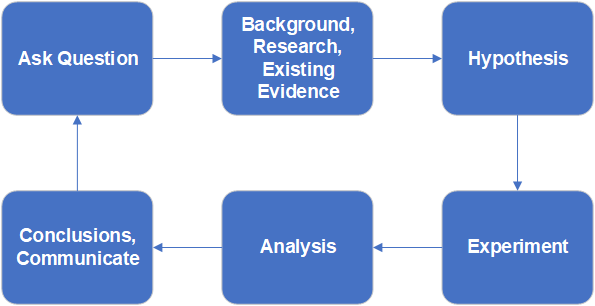
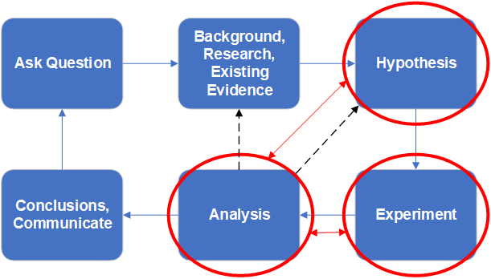
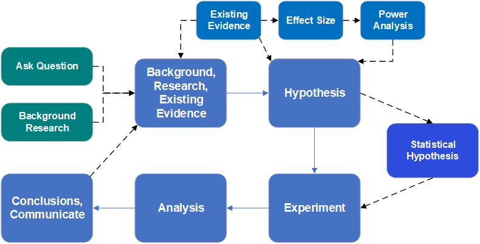

# Download the 2.1-chickwts.xlsx file, read it into a data
# object in R called "chicks",
# and convert the "feed" variable to a factor if necessary.
# Do not neglect looking inside the "raw" data file
# Is it as you expect? Is the data dictionary present and clear?
# Load necessary libraries
library(openxlsx)
# Read file
setwd("D:/Dropbox/git/DSgarage/public/data") # NB change to YOUR file path...
chicks <- read.xlsx("2.1-chickwts.xlsx")
# Convert feed to factor if needed
class(chicks$feed) # Character
chicks$feed <- factor(chicks$feed)
class(chicks$feed) # Factor1. Overview
The very first task for any data analysis is to gain an understanding of the data itself. This typically involves examining the variables (Are they as we expect? Do we need to adjust the variable types?), graphing the data, and possibly examining numerical summaries and statistical assumptions. Further, it is necessary to look for errors in the data both trivial (e.g. misspelling factor level names like “control” with an extra space “control”), and more serious such as numerical typographical errors (e.g. misplacing a decimal point is a classic: height of 5 men in feet: c(5.5, 5.8, 6.1, 5.9, 52)… ). In total, this part of data analysis is sometimes referred to as Exploratory Data Analysis.
Exploratory Data Analysis (EDA) is part practical and part philosophical in that is requires skill and experience, but is also subjective. Think of it as a step that might take a long while, where the data scientists decides what the analysis is that will be applied to the data, that the analysis is correct and appropriate. Ironically, while EDA is considered very important and can take a large proportion of the total time spent analysing data, it is usually only reported on very briefly if at all.
The order of operation for most analyses should be 1 question, 2 explore, 3 analyse. Focus on the question and make sure it is clear in formulation, and choose an analysis approach that can resolve the question (given the data… but the data collection should be DESIGNED to fit the question and chosen analysisprior to collection). Explore the data to examine any assumptions required for the analysis, including the use of graphing and any diagnostic or summary statistics. Finally, perform and summarize the analysis. We will practice this workflow for different basic questions in this module, with an emphasis on simple quantitative data.
On this page you will find:
Question Formulation & Hypothesis Testing
Summarise
Variables & Graphing
Analysis vs ‘EDA’
Exercises
2. Question Formulation & Hypothesis Testing
It is the primary responsibility of the data collector and the data scientist to agree on the specific details of generating evidence from data (i.e., statistical analysis) to answer questions. When these roles are occupied by the same person, this matter should be settled before collecting any data.
The general topic of formulating statistical questions is vast; many books have been written on the subject. The tradition and practice of statistical analysis has evolved through time. Here we will focus on the traditional starting point for a “first statistics course”, within the context of Null Hypothesis Significance testing (NHST).
Sampling concept and NHST
The gambit of NHST is that there is a population of interest but that the population cannot be directly measured because it is too big or otherwise inconvenient or impossible to measure. Thus, experimental samples are drawn randomly from the population, possibly subjected to experimental conditions, and the magnitude of observed differences or measured associations are summarized by various test statistics and compared to how likely such an observed difference or association would be to observe in the absence of the hypothesized effect (the latter is referred to as the null hypothesis). Finally, a P-value, the (conditional) probability of the observed effect siuze relative to the null hypothesis of no difference, is used to decide if the observed difference is “signficant”.
Traditionally, the P-value is compared to the alpha value, almost always set to 0.05. This alpha value can be interpreted as the maximum probability that is acceptable of making a mistake and concluding there IS a difference, when in fact a difference does not exist. When the P-value is less than 0.05, we conclude there is a difference, rejecting the null hypothesis and “accepting” the hypothesis we predicted was true (usually referred to as the alternative hypothesis)
NHST notes
The NHST is sometimes viewed contemporarily as a little deficient in practice. The reasons for this are complicated, but relate to alternative statistical frameworks that are now possible due to the development of statistical theory (e.g. Bayesian statistics, the Generalized Linear Model) and computational methods (e.g. machine learning). Nevertheless, it is still in standard use in many fields and remains the staple for the “first statistics class”.
| Benefits of NHST | Criticisms of NHST |
|---|---|
| Familiar and acceptable to majority of researchers | Often conceived, applied and interpreted under error |
| Typically robust to assumptions when applied correctly | Validation of analysis (e.g. assumptions testing) is often neglected |
| Strong framework for evidence, especially for experiments | Education for applied researchers deficient in sciences |
| The basic idea is objective and simple | Though simple, practitioners may be ignorant of subtle concepts |
Further reading: If the idea is new to you that NHST in statistics is not perfect and you want to get serious about understanding why, like most subjects, you will need to pursue further sources.
3. Summarise
The best way gain skill in handling data is to practice.
Weighing the pig is the term we use to describe creating a summary-at-a-glance of a dataset. Usually this includes graphics and statistical summary, as well a description of how much data we have. A key consideration is, also, the specification of the variables.
We will practice data handling with the data file chickwts.xlsx.
Download the file, read it into a data object in R called “chicks”, and convert the “feed” variable to a factor if necessary.
Try this in your example script:
The hypothesis voices “how you think the world works” or what you predict to be true”
The basic hypothesis we believe is true for the chicks dataset might be phrased in different ways.
Chick weight differs after 6 weeks according to feed additive type
Mean chick weight varies according to feed additive type
The variance between chick weight for different feed additives is bigger than the variance within chick weight as a whole
The minimum amount of information we are ususally interested in when sizing up a dataset is How much data is there?, What is the central tendency (e.g. the mean, variance, etc.)?, and possibly Are there rare values?. We would typically start graphing the data right away. If we have a notion of what our questions or hypotheses are, they should inform the initial peek at the data. For example, in the chickwts data, we know our question will be related not to the overall central tendency of chick weight, but to chick weight for each individual feed type.
We do not approach this sizing up of the data in a workhorse fashion, merely to check a tick box. We are looking quickly for details in the data that give us insight into what the data is like. For example, we peek at whether the mean and median are close to each other (indicator our data may be Gaussian), we compare the standard deviation, variance or standard error of a numeric variable relative to different levels of a factor, to see if they are similar.
Try this in your example script:
# Summarize the whole dataset
# summary() provides summary statistics for numeric variables and counts
summary(chicks)
# we might want to look at summary for different levels of feed
?summary
summary(object = chicks$weight[which(chicks$feed == "casein")])
summary(object = chicks$weight[which(chicks$feed == "horsebean")])
# etc. - this method is easy but inelegant?
# aggregate()
?aggregate
# mean
aggregate(x = chicks$weight, by = list(chicks$feed), FUN = mean)
# standard deviation
aggregate(x = chicks$weight, by = list(chicks$feed), FUN = sd)
# You can make your own function for the FUN argument
# stadard error of mean, SEM = standard deviation / square root of sample size
aggregate(x = chicks$weight, by = list(chicks$feed),
FUN = function(x){ sd(x)/sqrt(length(x)) })
# You can apply several functions and name them!
aggregate(x = chicks$weight, by = list(feed = chicks$feed),
FUN = function(x){ c(mean = mean(x),
sd = sd(x),
SEM = sd(x)/sqrt(length(x)))})4. Variables & Graphing
A good graph usually tells the whole story, but a bad graph is worse than no graph at all.

There are a few topics in graphing data that are important to consider here, but the topic is wide and deep, analytical, creative and even artistic. We make a distinction between graphs used to explore data during EDA (meant to be “consumed” only by the data scientist who made them and are of no use to document a pattern to others) and graphs indended to document information. For both kinds of graphs, best practice is develop best practice principles.
Scientific graphs:
Must convey the relevant information
Should be consistent in aesthetics
Must be self-contained (meaning is contained 100% within the figure and legend)
Should reflect a hypothesis or statistical concept (if not purely descriptive)
Should be appropriate to the data
You can think of R graphics as a way to “build up information in layers” onto a graph. There are many aesthetic features of graph that can be controlled, like adding colors, text, lines, legends, etc. The R graphics system is very simple to use, but can also be very powerful (mastering this takes practice). We make a distinction here between R base graphics and packages that can be used to make specialized and varied graphs (like the powerful and popular package {ggplot})
Layering information
We can look at graphing the chicks data in a few different ways. We will try a few different graphs in this way, building up features. We might build up features on a graph using arguments in a particular graph function (like the main title with the argument main, or the x axis title with the argument xlab), or by adding features with additional function to “layer” onto the base graph (like adding lines with the functions abline() or lines()).
Typically you would choose the type of graph that both fits the type of data you have and that conveys the information you wish to examine or showcase. E.g., for a single numeric variable, you might wish to show:
The distribution of data with a histogram:
hist()The central tendency relative to a factor with a boxplot:
boxplot()
Try the following in your example script:
Histogram of the
chicksdata## help(hist) - if needed hist(x = chicks$weight)Add a title with
main# Argument main hist(x = chicks$weight, main = "Distribution of chick weights (all feeds)")Add an x axis title with
xlabhist(x = chicks$weight, main = "Distribution of chick weights (all feeds)", xlab = "Chick weight (grams)")Add a vertical line for the weight mean with
abline()hist(x = chicks$weight, main = "Distribution of chick weights (all feeds)", xlab = "Chick weight (grams)") # help(abline) - if needed abline(v = mean(chicks$weight), col = "red", lty = 2, lwd = 3)Try a
boxplot()# help(boxplot) - if needed boxplot(x = chicks$weight) # I have seen worse graphs, but I can't remember when. # Flash challenge: Fix. It.Weight as a function of feed
boxplot(formula = weight ~ feed, data = chicks) # This is probably a good representation of our hypothesis # Flash challenge: Fix the graph...
5. ‘Analysis’ vs. ‘EDA’
Although you could consider Exploratory Data Analysis, EDA, as an important part of the complete process of data analysis, we might make a distinction between “Analysis” the part of analysis that generates Evidence, and that of EDA that is used to explore data and test assumptions.
| Analysis | EDA |
| Designed to fit a specific question or hypothesis | Informal and may be haphazard |
| Part of a workflow: Informal hypothesis statement (in plain language) > Statistical hypothesis (specifies a or implies a statistical test) > Evidence (the specific results) | Designed to explore or gain understanding of data |
| Designed and usually formatted to present to others, such as in a report or a scientific manuscript | Assumptions testing |
| Contains only bare essentials as relates to the initial hypothesis (e.g. a good graph, the summary of a statistical analysis) | Usually not designed to document or show to others |
| Should strictly be reproducible via a script and archived data | Occurs primarily before (every) analysis |
| Done only after EDA | May or may not be documented to be reproducible |
| Done before the final, evidence-generating Analysis |
We can keep this concept of EDA versus Analysis in our mind while we discuss the Statistical Analysis Plan.
6. Statistical Analysis Plan
A Statistical Analysis Plan (SAP) is a formal document that should be used to design data analysis. One of the most important functions of the SAP is to make a formal connection between the hypothesis, the data collected and and the method of analysis that will be used to generate evidence to support or refute the hypothesis. The components of a basic SAP are:
The hypotheses stated in plain language
Each hypothesis translated into a specific statistical model
Specification of data and and data collection methods
Specification of effect size
Justification of sample size through power analysis or other means
Definition of all of these components is beyond the boundaries of this Bootcamp, however the explicit connection of hypotheses with a statistical model is one of the very basic elements of best practice in science.
The Scientific Method
We usually learn the scientific method as a cycle where we conceive a problem, form a hypothesis, conduct an experiment, evaluate the result and so on. We teach this as a literal cycle.

This classic view of the scientific process implies that we plan the analysis only after we conduct the experiment and collect data. While many data scientists or statisticians would agree that this model is widely used in science, it is considered very poor practice for several reasons.
The expected difference or relationship (i.e., the effect size) should explicitly be part of the hypothesis and quantified BEFORE collecting data
The statistical test must be chosen prior to collect the data to insure the evidence matches the expectation
The sample size should be justified, using power analysis or a less formal means. Collecting too little data will likely result in failing to detect a difference (if if your hypothesis is correct!); Collecting too much data is simply a waste of resources.

Best practice scientific process
The traditional view of the scientific method should probably be adjusted to explicitly accomodate planning the analysis at the same time as the hypothesis formulation stage. Likewise, the analysis plan should specifically influence the design of the data collection for the experiment.

A modern view of best practice of scientific endeavor incudes an experimental design phase, that includes consideration of effect size and power analysis, and the production of a statistical analysis plan that contains a formal statistical hypothesis. All off this happens prior to any data collection.
7. Exercises
For the following questions, use the field-trial.xlsx dataset. This is real data in Tidy Data format, but our information for these exercises is limited precisely to the contents of the file, including the data dictionary. In this experiment, seeds were raised under field trial conditions for 2 weeks to look at the effect of different treatment conditions on mass gain during germination. There are several measured variables, with the calculated pct variable probably intended to be the dependent variable, with the factor treatment being the main explanatory variable for variation in pct.
Show code to set up an R analysis file with a header, table of contents, and a setup section that sets your working directory, loads any required libraries and reads in the data. Call the data.frame object you create
seed.pct,wetanddryshould be numeric;blockandtrialshould be factors, andtreatmentshould be a factor with the level “Control” set as the reference. Show the code to do this.Use
aggregate()to calculate the mean, standard deviation, standard error, and the count (e.g.length()) ofpctfor each level oftreatment. Show the code.Make a fully labelled boxplot of the
pctas a function oftreatment. Add a horizontal line (red and dashed) for the overall mean of pct, and 2 horizontal lines (gray, dotted) for the overall mean ofpct+/- 1 standard deviation.(hard: may require tinkering and problem solving) Experiment making a boxplot showing
pct ~ treatmentseparated for each trialWrite a plausible practice question involving
aggregate()andboxplot()in-built R datasetiris.